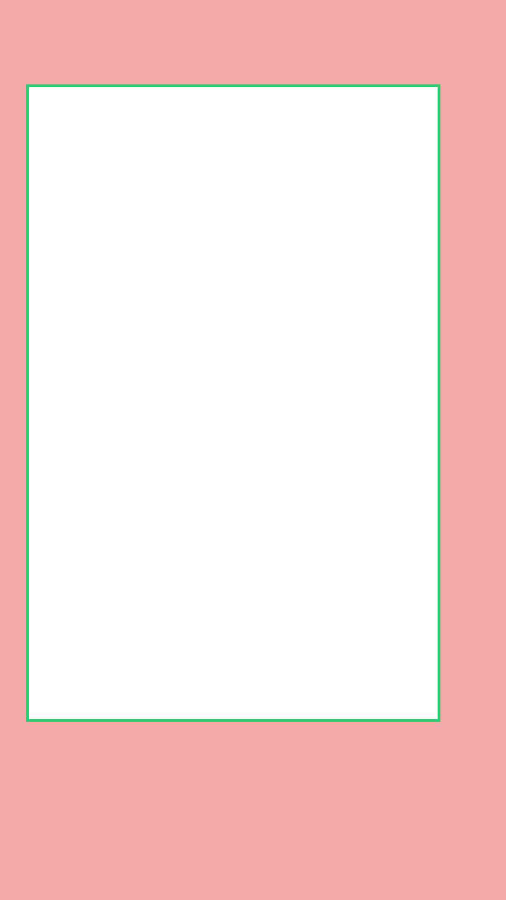

Instagram Reels safe zone
On a 1080×1920 9:16 video, keep text, faces and logos inside a 884×1360 px box: 180 px down from the top, 380 px up from the bottom, 56 px in from the left and 140 px in from the right. Everything outside it can end up under the profile name, caption and audio credit along the bottom, the like, comment, share and more column on the right, and the Reels header and camera button at the top.
| Canvas | 1080 × 1920 px (9:16) |
|---|---|
| Safe area | 884 × 1360 px |
| Top margin | 180 px |
| Bottom margin | 380 px |
| Left margin | 56 px |
| Right margin | 140 px |
| Visible share of frame | about 58% |
Free Instagram Reels safe zone template
Transparent PNG, 1080×1920. Drop it on a track above your footage in CapCut, Premiere Pro, Final Cut, DaVinci Resolve or Canva, and turn it off before you export. Red is covered, the green box is safe.


Common questions
What is the Instagram Reels safe zone?
It's the part of a 9:16 video that stays visible once Instagram Reels draws its interface on top. On a 1080×1920 canvas, it's a 884×1360 px box starting 56 px from the left and 180 px from the top.
How much of a Instagram Reels video gets covered?
About 42% of the frame sits under the profile name, caption and audio credit along the bottom, the like, comment, share and more column on the right, and the Reels header and camera button at the top. Roughly 58% stays clear.
Where should captions go on Instagram Reels?
Keep burned-in captions above 1540 px from the top (at least 380 px off the bottom edge) and left of 940 px, so the right-hand buttons don't cover them.